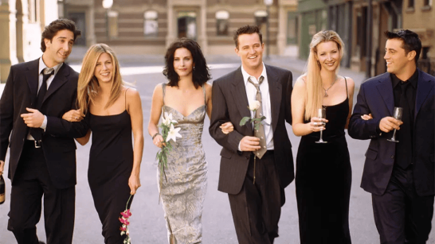

Friends: The One from the Fans

You’ve just landed at your Friends fan headquarters — where every episode feels like a warm hug, and the coffee’s always brewing at Central Perk. Whether you’re rewatching for the hundredth time or discovering the magic of six best friends navigating life and love in New York City, this is your place. Explore iconic episodes, unforgettable characters, and heartfelt tributes to the cast that became a part of our lives. So, grab a comfy seat on the couch (pivot if you have to) — We’re all Friends here!